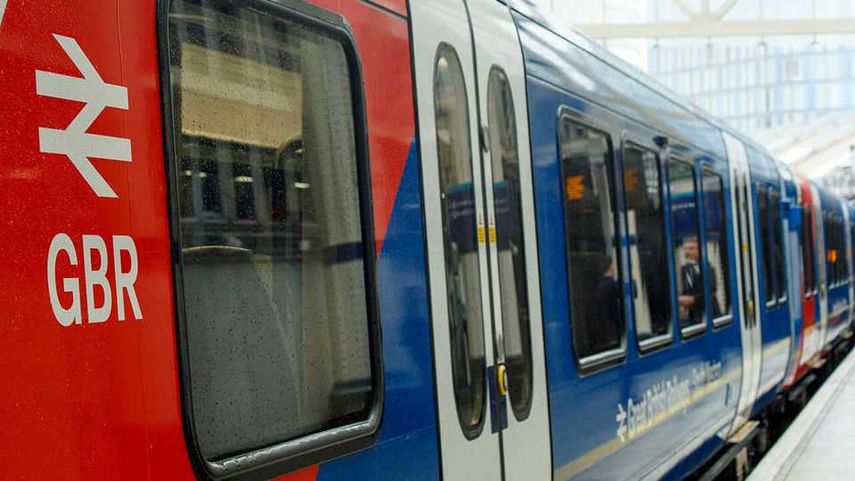
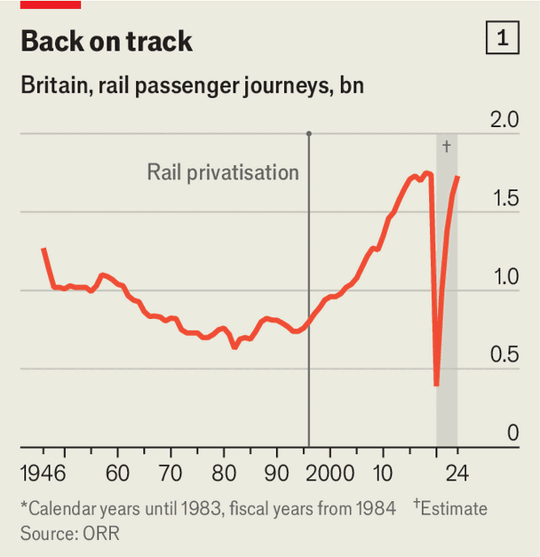
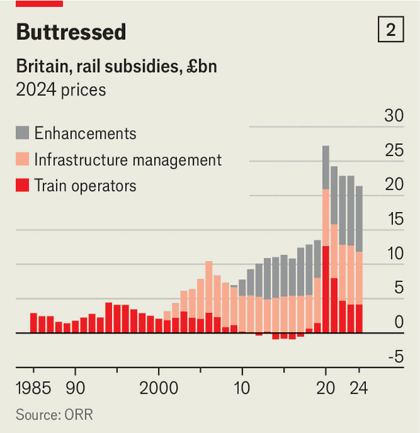

Britain’s rail nationalisation is going full steam ahead
But it risks going down the wrong track
June 11th 2026

British commuters moaning about the trains should remember that life could be worse. They could be Germans. Some 91% of British trains arrived within five minutes of schedule in 2024; only 82% of German ones did. The Swiss (punctuality rate: 93%) are so fed up that they are terminating any German trains that arrive 20 minutes late at the border.
The struggles of Germany’s state-run operator suggest that public ownership is no panacea. That is a lesson Britain’s Labour Party should heed as it renationalises the railways. The British government now controls 53% of trips, up from 16% in 2023-24, with more to follow. Heidi Alexander, the transport secretary, has promised that Great British Railways (GBR), the new state operator, will run more services, have simpler fares and provide cleaner lavatories. Labour’s left sees it as step one in a sweeping renationalisation of the economy.
The changes so far have mostly entailed daubing the new GBR trains in garish Union Jack colours. Although some services have improved, others, such as the South Western routes (nationalised since May 2025), have seen cancellations increase.

Nationalisation is unlikely to solve the railways’ problems. This is partly because privatisation wasn’t the disaster that many claim. The number of rail journeys more than doubled from 700m at privatisation in 1994-95 to 1.7bn in 2024-25 (see chart 1). This was mostly driven by demographic changes, but innovative private-sector ticketing strategies helped. And although passengers grumble about delays, Britain’s trains are on average more punctual than those in most other European countries.
Britons’ most legitimate complaint concerns fares. On some measures, they are among Europe’s highest. A peak ticket booked the evening before from London to Liverpool costs £120 ($160), double the price of an equivalent Italian journey. Although advance booking narrows the gap, the country’s railways are undeniably expensive, especially when subsidies are taken into account. The government provided £12bn in operational support in 2024-25, up in real terms from £2bn in 2000-01 (see chart 2).

Nationalisation will not fix these funding woes either. Private train operators were not creaming off excess profits; they barely mustered profit margins of 2% before the covid-19 pandemic. It was the nationalisation-shy Tories who had to put the first four English operators into public ownership because the firms were so broke.
Perhaps nationalisation’s most promising benefit comes from better co-ordination. Squabbling between train operators and Network Rail, the state-run body which maintains the track, has plagued the system for decades. In certain households the 2018 timetable fiasco is still not safe dinner-party conversation. Having a single co-ordinating body like GBR should improve services. But it will take years for most benefits to materialise.
Public ownership also has costs. Stephen Glaister, a transport academic, warns that GBR could become a “really powerful monopoly”. The public entity will be financially incentivised to prioritise its own passenger services over disruptive private-sector entrants. This is particularly worrying given that the arrival of newcomers like Lumo in recent decades has provided much-needed competition.
Crucially, state ownership will not tackle rising costs. Take Britain’s rail unions. They have opposed efficiencies like ticket-office closures and managed to double train-driver pay in real terms since the 1980s (bus-driver pay has stagnated). Nationalisation will increase the pressure to buy off strikes. It is telling that on being elected in 2024, Labour awarded generous pay rises to train drivers for little in return.
Changing travel patterns are another issue. Fewer deep-pocketed commuters and more cost-conscious joyriders have meant that revenue is 12% down on pre-pandemic levels. The Treasury is bristling at the subsidy required and wants to reduce costs. Yet this would require fare rises or less investment. Labour has already shown it will not stomach higher ticket prices, making a fanfare of freezing them this year. And reducing investment will lead to worse services. This is a sticky trade-off, and one public ownership cannot help with.
Ms Alexander insists nationalisation is more than “a paint job”. But if Labour sidesteps the underlying problems, it risks becoming a botched one. ■
For more expert analysis of the biggest stories in Britain, sign up to Blighty, our weekly subscriber-only newsletter.